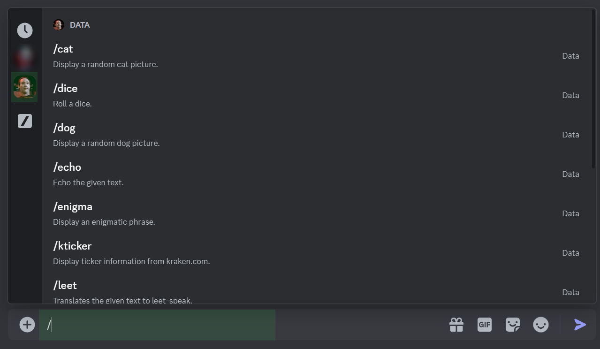
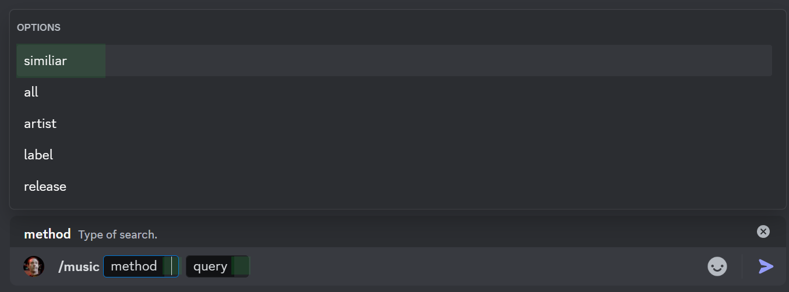
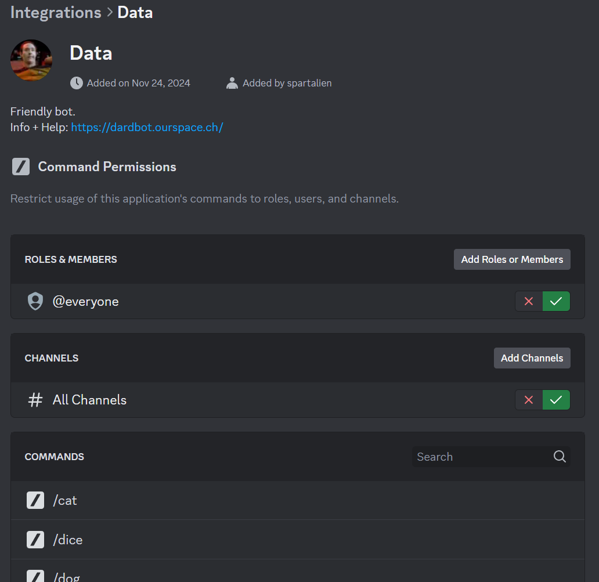

Usage
[ usage ]
To start, type / in the message input box, and then look for Data's commands in the list that will pop-up.
On the left side of the commands list should be Data's avatar visible - click on it to show only his commands.

Automatic documentation is provided once you start using a command.

Server admins can adjust usage permission in the server integrations settings.

Commands
[ commands ]
| Command | Options | Description | Response Visibility |
|---|
Changelog
[ changelog ]
Whenever a new version goes live, the changes that affect users will be reported here.
v1.0.0 - 2025-01-28
- Removed:
sysinfocommand response does not include CPU and shell users counts anymore. - Changed:
echocommand response does not suppress embeds anymore. - Added:
sysinfocommand response now also includes bot uptime.
beta3.3 - 2025-01-21
- Changed:
ktickercommand response cosmetics.
beta3.2 - 2025-01-03
- Changed:
music,qrcode,rhymeandtimeresponses are now only visible to the user that invoked the command. Reasoning was "to reduce bot spam". - Added:
dicecommand.
beta3.1 - 2024-11-28
- Added:
ktickercommand.
beta3 - 2024-11-24
- Removed:
antocommand. - Removed:
dictcommand. - Removed:
helpcommand. - Removed:
synocommand. - Removed:
tcmdcommand. - Changed:
syscommand renamed tosysinfo. - Added:
echocommand.
beta2 - 2024-11-16
- Removed:
animalcommand. - Changed:
musiccommand behaviour and arguments. - Added:
antocommand. - Added:
catcommand. - Added:
qrcodecommand. - Added:
rhymecommand. - Added:
synocommand. - Added:
tcmdcommand.
beta1 - 2024-11-06
- Added:
animalcommand. - Added:
enigmacommand. - Added:
helpcommand. - Added:
leetcommand. - Added:
musiccommand. - Added:
quotecommand. - Added:
syscommand. - Added:
timecommand.
About
[ about ]
Made upon request by arT2 for FoxyFoo and her circle.
Privacy: Currently the bot does not retain any history of conversations or activities. In the future, this may change if features like generating statistics or other enhancements are introduced; however, this will be reflected in the changelog. In any case no user data is shared with or sold to third parties.